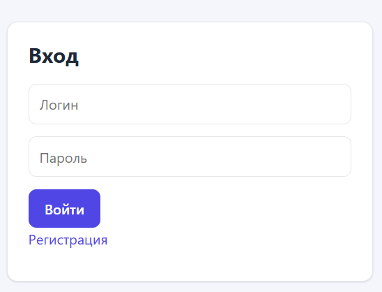
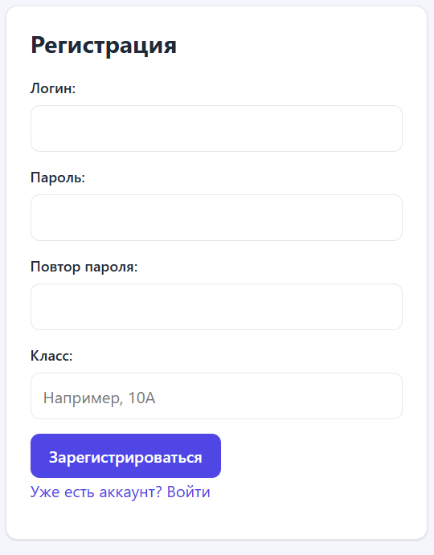
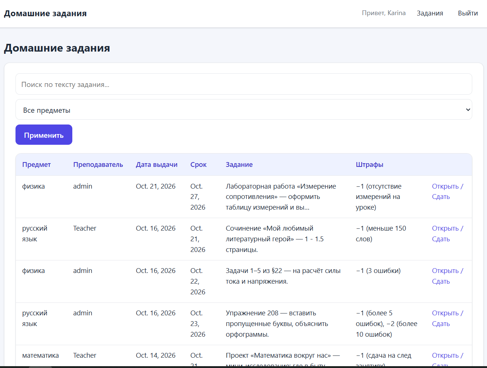
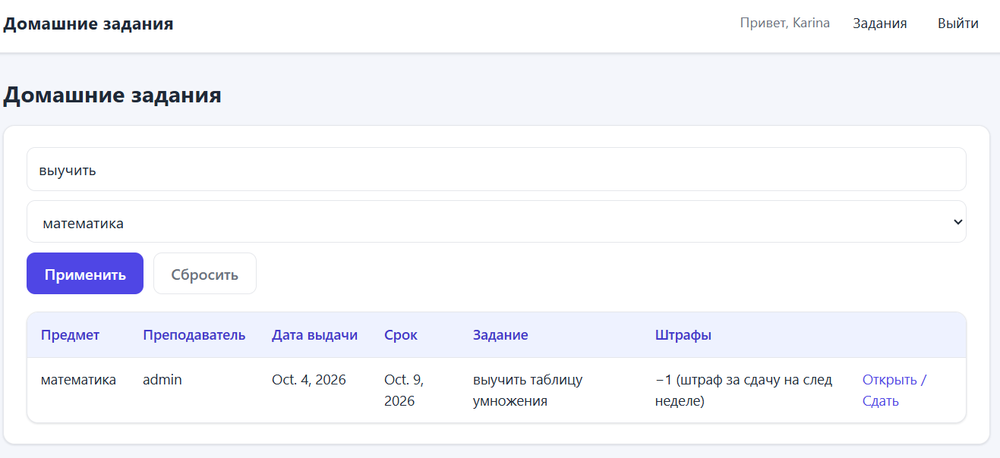
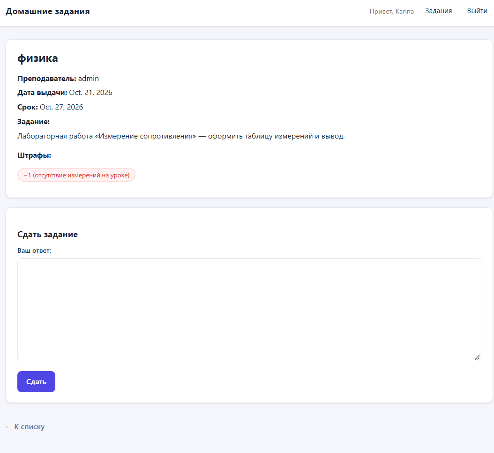
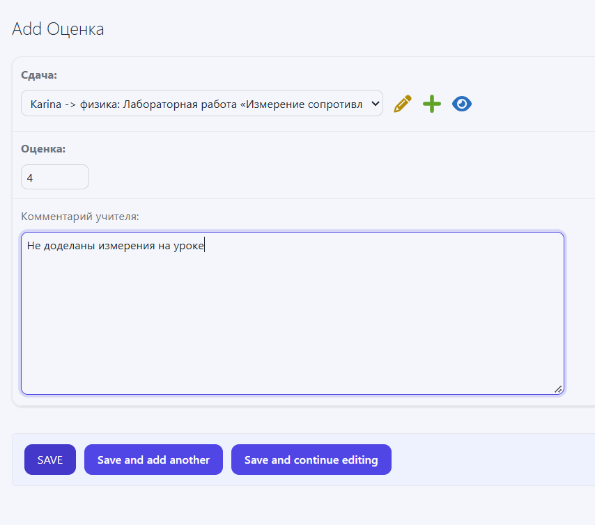
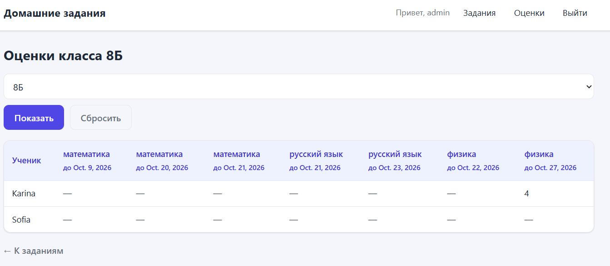
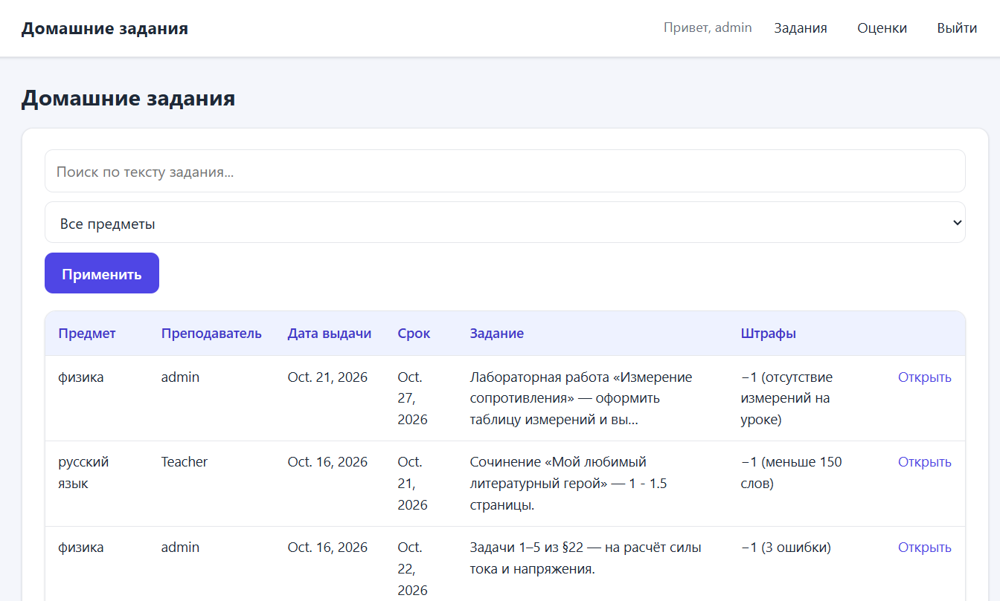
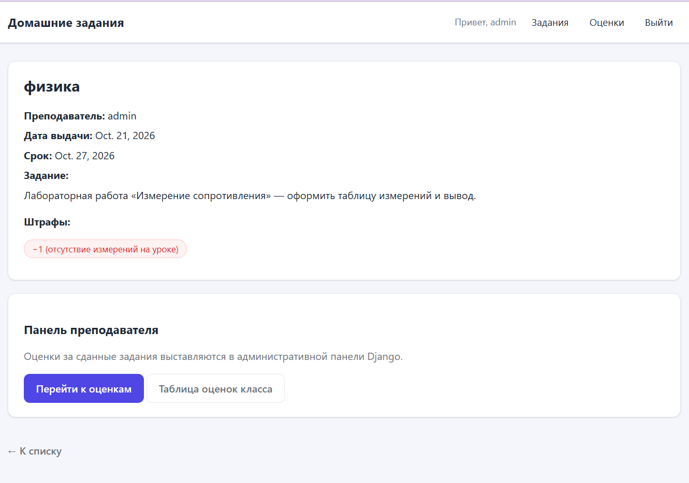
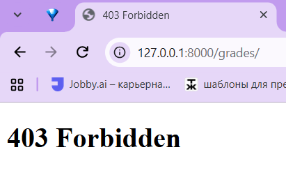

Лабораторная работа №2. Веб-приложение на Django: домашние задания
Студентка: Мкртчян Карина, группа K3341 Стек: Python 3.14, Django 6.1, SQLite, HTML + собственный CSS
Цель работы
Разработать веб-приложение на Django для работы с домашними заданиями: регистрация пользователей, просмотр заданий по всем дисциплинам, сдача заданий в текстовом виде, выставление оценок учителем и таблица оценок класса. Дополнительно реализованы стилизация интерфейса, пагинация с поиском и фильтрацией, а также разграничение прав администратора и обычного пользователя в клиентской части (а не только в Django-admin).
Структура проекта
lab2/
├─ homework_project/ # настройки проекта, корневые urls
├─ users/ # профиль пользователя, регистрация/вход/выход
├─ homework/ # предметы, задания, штрафы, сдачи, оценки
├─ templates/ # base.html, users/, homework/, admin/
└─ manage.py
Проект разбит на два приложения: users (аутентификация и профиль) и homework
(предметная логика). Общие шаблоны лежат в корневой папке templates/, которая подключена
в settings.py через DIRS.
Модель данных
Модель продумана так, чтобы одними и теми же сущностями было удобно пользоваться: одна сдача на ученика и задание, одна оценка на сдачу, штрафы вынесены в отдельную таблицу.
class Homework(models.Model):
subject = models.ForeignKey(Subject, on_delete=models.CASCADE,
related_name="homeworks", verbose_name="Предмет")
teacher = models.ForeignKey(settings.AUTH_USER_MODEL, on_delete=models.SET_NULL,
null=True, blank=True, related_name="created_homeworks",
limit_choices_to={"is_staff": True},
verbose_name="Преподаватель")
issued_at = models.DateField("Дата выдачи", default=timezone.now)
deadline = models.DateField("Срок выполнения")
text = models.TextField("Текст задания")
class Submission(models.Model):
homework = models.ForeignKey(Homework, on_delete=models.CASCADE,
related_name="submissions")
student = models.ForeignKey(settings.AUTH_USER_MODEL, on_delete=models.CASCADE,
related_name="submissions",
limit_choices_to={"is_staff": False})
text = models.TextField("Текст ответа")
submitted_at = models.DateTimeField("Дата сдачи", auto_now_add=True)
class Meta:
unique_together = ("homework", "student") # одна сдача на задание
Сущности: Subject (предмет), Homework (задание: предмет, преподаватель, дата выдачи,
срок, текст), Penalty (штраф по заданию — отдельной таблицей), Submission (сдача в
текстовом виде), Grade (оценка, OneToOneField к сдаче), Profile (класс ученика).
Регистрация и вход
Регистрация реализована формой RegisterForm с проверкой уникальности логина и совпадения
паролей. При регистрации создаётся профиль ученика (is_staff=False) с указанием класса.
class RegisterForm(forms.Form):
username = forms.CharField(label="Логин", max_length=150)
password = forms.CharField(label="Пароль", widget=forms.PasswordInput)
password2 = forms.CharField(label="Повтор пароля", widget=forms.PasswordInput)
school_class = forms.CharField(label="Класс", max_length=10, required=False,
widget=forms.TextInput(attrs={"list": "class-list", "autocomplete": "off"}))
def clean(self):
cleaned = super().clean()
if cleaned.get("password") and cleaned["password"] != cleaned.get("password2"):
raise forms.ValidationError("Пароли не совпадают.")
return cleaned
Чтобы не создавать классы заново и не опечатываться, поле «Класс» подсказывает уже
существующие значения через <datalist> — можно выбрать готовый класс или ввести новый.
Скриншот 1. Форма регистрации: видно поле «Класс» с выпадающей подсказкой существующих классов.

Скриншот 2. Форма входа.

Просмотр заданий: пагинация, поиск и фильтрация
Список заданий — это ListView с пагинацией по 5 записей. Поиск идёт по тексту задания,
фильтр — по предмету; оба работают по одному пагинируемому набору, а параметры поиска
сохраняются при переходах по страницам.
class HomeworkListView(ListView):
model = Homework
template_name = 'homework/homework_list.html'
paginate_by = 5
def get_queryset(self):
queryset = super().get_queryset().select_related('subject', 'teacher')
if query := self.request.GET.get('q'):
queryset = queryset.filter(text__icontains=query)
if subject := self.request.GET.get('subject'):
queryset = queryset.filter(subject_id=subject)
return queryset
def get_context_data(self, **kwargs):
context = super().get_context_data(**kwargs)
context['subjects'] = Subject.objects.all()
params = self.request.GET.copy()
params.pop('page', None)
context['querystring'] = params.urlencode() # сохраняем q и subject в ссылках
if context.get('page_obj') and context.get('paginator'):
context['page_range'] = context['paginator'].get_elided_page_range(
context['page_obj'].number, on_each_side=1, on_ends=1) # 1 … 4 5 6 … 20
return context
Скриншот 3. Список домашних заданий под учеником: таблица (предмет, преподаватель, дата выдачи, срок, задание, штрафы), форма поиска, фильтр по предмету и блок пагинации.

Скриншот 4. Тот же список с заполненным поиском и выбранным предметом (показано, что фильтрация работает).

Сдача задания
На странице задания ученик вводит ответ в текстовом виде. Если он уже сдавал это задание,
форма загружается с существующим ответом и сохраняется как обновление (за счёт instance).
existing = Submission.objects.filter(homework=hw, student=request.user).first()
if request.method == "POST" and not request.user.is_staff:
form = SubmissionForm(request.POST, instance=existing)
if form.is_valid():
submission = form.save(commit=False)
submission.homework = hw
submission.student = request.user
submission.save()
Скриншот 5. Страница задания под учеником: описание задания, штрафы и форма «Сдать задание».

Выставление оценки через Django-admin
Учитель ставит оценку за сдачу в Django-admin. Модель Grade зарегистрирована в админке,
рядом со сдачей показывается значение и комментарий.
@admin.register(Grade)
class GradeAdmin(admin.ModelAdmin):
list_display = ("submission", "value", "graded_at")
list_filter = ("value",)
Оформление самой админки тоже настроено: переопределён шаблон templates/admin/base_site.html
и заданы заголовки (site_header, site_title, index_title), тема приведена к цветам сайта.
Скриншот 6. Django-admin, список оценок / форма выставления оценки.

Таблица оценок класса (клиентская часть)
Отдельная клиентская страница формирует таблицу: строки — ученики класса, столбцы — задания,
в ячейках — оценка. Размер матрицы строится в представлении через словарь grades по паре
(student_id, homework_id).
grades = {}
for g in Grade.objects.select_related("submission__student", "submission__homework"):
grades[(g.submission.student_id, g.submission.homework_id)] = g.value
rows = []
for student in students:
row = {"student": student, "cells": [
grades.get((student.id, hw.id), "—") for hw in homeworks
]}
rows.append(row)
Класс выбирается выпадающим списком (пункт «Все классы» показывает всех учеников).
Скриншот 7. Таблица оценок класса под учителем.

Разграничение прав администратора и пользователя в клиенте
Разграничение сделано именно в клиентском интерфейсе, а не только через Django-admin:
- в шапке (
base.html) ссылка «Оценки» и таблица оценок видны только{% if user.is_staff %}; - на странице задания учитель видит «панель преподавателя» (ссылки на оценки), а ученик —
форму сдачи:
{% if user.is_staff %} ... {% else %} <форма сдачи> {% endif %}; - доступ к таблице оценок закрыт на уровне представления — обычный пользователь получает 403:
@login_required
def grade_table(request):
if not is_teacher(request.user): # is_authenticated and is_staff
raise PermissionDenied
...
Скриншот 8. Страница задания под учителем: видна «панель преподавателя», формы сдачи нет.


Скриншот 10. Ученик открыл адрес /grades/ и получил 403 (Forbidden).

Стилизация
Интерфейс оформлен собственным CSS (без сторонних библиотек): в templates/base.html
заданы тема, карточки, таблицы, кнопки, формы, пагинация и адаптив. Отдельной темой оформлена
админка.
Как запустить
python manage.py migrate
python manage.py createsuperuser # учитель: отметить is_staff
python manage.py runserver
Итог
Реализовано всё из задания варианта: регистрация, просмотр заданий по всем дисциплинам, сдача в текстовом виде, выставление оценки через Django-admin и клиентская таблица оценок класса. Дополнительно: пагинация (продвинутая), поиск и фильтрация по пагинируемому набору, разграничение прав администратора и пользователя в клиенте, стилизация сайта и админки.